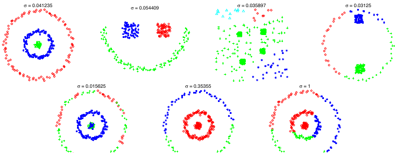
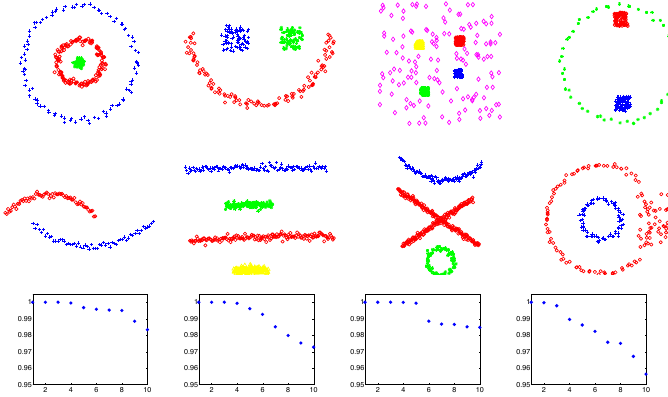
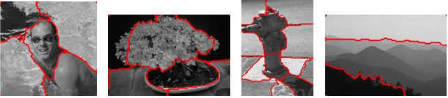

Built 2026-05-15 09:00:10 EDT
This report synthesizes ten full-paper reviews and audits on graph
conductance and kernel choices for Laplacians, diffusion operators,
semi-supervised graph regression, manifold learning, and graph signal
smoothing. The immediate SIMODS purpose is methodological: to guide a
future benchmark that compares the current gflow
low-pass/GCV smoother with length- and kernel-conductance alternatives.
The central conclusion is that researchers rarely choose conductances
only as inverse metric lengths. Gaussian kernels, heat kernels,
self-tuned/local-scale kernels, density-normalized kernels, Markov
normalizations, and graph-spectral filters each encode a different
answer to the question “what should count as a smooth signal on this
graph?” These choices change the graph energy, the eigenbasis, the
diffusion geometry, and therefore the behavior of low-pass smoothing and
GCV. For SIMODS, the current fit.rdgraph.regression()
operator must be kept conceptually separate from these planned
comparators: the current precomputed-graph path uses supplied edge
lengths for local neighborhood ordering/truncation and then constructs
an overlap-density/Riemannian-complex conductance, not direct
inverse-length, Gaussian, or self-tuned conductances.
This synthesis is based on the H005 review workspace
literature/conductance_kernel_laplacian_review. The source
manifest records the canonical reading copy for each Tier 1 paper,
including original URL, DOI or arXiv identifier when available, local
path, access date, page count, and SHA-256. Each Tier 1 paper was
assigned to a dedicated reviewer and a dedicated auditor. Reviewers read
the whole paper, including figures. Auditors checked formulas, operator
definitions, figure references, evidence labels, and relevance to
gflow/SIMODS. All ten audits returned minor revisions; no
auditor requested a full reread. The review memos now include post-audit
revision notes.
The evidence labels used here are:
The claim is directly stated in the reviewed paper.
The claim follows from formulas, algorithms, figures, or experiments in the paper, but is not stated in exactly this language.
The claim is our SIMODS/gflow interpretation or cross-paper synthesis.
The claim is plausible but ambiguous, typographically suspect, or awaiting developer/paper confirmation.
Unless otherwise marked, paper-specific statements in the paper-by-paper section are summaries of explicit or directly derived review findings. The SIMODS recommendations are contextual.
| ID | Paper | Main conductance/kernel theme | Main SIMODS role |
|---|---|---|---|
| P01 | Zelnik-Manor and Perona (2004) | self-tuned local-scale Gaussian affinity | adaptive/local-scale comparator |
| P02 | Belkin and Niyogi (2001) | heat-kernel and binary graph weights for Laplacian Eigenmaps | heat-kernel manifold-learning baseline |
| P03 | Coifman and Lafon (2006) | kernel, density normalization, Markov diffusion | diffusion/Markov normalization baseline |
| P04 | Berry and Harlim (2016) | variable-bandwidth diffusion kernels | local-bandwidth and density-correction theory |
| P05 | Zhu, Ghahramani, and Lafferty (2003) | graph weights for harmonic-function semi-supervised learning | graph interpolation/regression analogue |
| P06 | Belkin, Niyogi, and Sindhwani (2006) | graph Laplacian regularization in learning | regularization objective analogue |
| P07 | Shuman et al. (2013) | graph Fourier bases and spectral filters | graph low-pass smoothing semantics |
| P08 | Hein, Audibert, and Luxburg (2007) | convergence of graph Laplacians on random neighborhood graphs | normalization and density-limit warnings |
| P09 | Belkin and Niyogi (2008) | theoretical foundation for Laplacian manifold methods | heat-kernel/Laplace-Beltrami theory baseline |
| P10 | Cheng and Wu (2022) | kNN self-tuned kernel graph Laplacian convergence | adaptive/kNN local-scale theory |
Let \(G=(V,E)\) be an undirected graph with \(n=|V|\) vertices. A graph signal is a vector \(f\in\mathbb{R}^n\), or a matrix \(F\in\mathbb{R}^{n\times p}\) when \(p\) features are smoothed on the same graph. A nonnegative edge weight \[c_{ij}=c_{ji}\ge 0\] can be called an affinity, similarity, weight, or conductance depending on the paper and task. With weighted adjacency \(W=(c_{ij})\), degree \(D_{ii}=\sum_j c_{ij}\), and unnormalized Laplacian \(L=D-W\), the standard Dirichlet energy is \[\mathcal{E}_G(f) = f^\top L f = \frac12\sum_{i,j} c_{ij}(f_i-f_j)^2 = \sum_{\{i,j\}\in E} c_{ij}(f_i-f_j)^2.\] The factor convention matters. Several reviewed papers print unhalved double sums while also writing \(f^\top Lf\). This does not change minimizers, but it does matter for precise comparisons of objectives and constants.
For a matrix signal \(F\), the analogous energy is \[\operatorname{tr}(F^\top L F) = \frac12\sum_{i,j} c_{ij}\|F_i-F_j\|^2.\] Large \(c_{ij}\) makes disagreement across edge \((i,j)\) expensive. Thus the conductance rule determines what functions are low energy before any smoothing parameter is chosen.
The review treats many formulas as members of a common family \[c_{ij}=\phi(\ell_{ij};\theta),\] where \(\ell_{ij}\) is an ambient distance, graph edge length, or local dissimilarity, and \(\theta\) includes bandwidth, exponent, local bandwidth, density, or normalization parameters. Important examples are: \[\begin{aligned} c_{ij}^{\mathrm{len}} &= (\ell_{ij}+\epsilon)^{-\alpha},\\ c_{ij}^{\mathrm{exp}} &= \exp(-\ell_{ij}/\sigma),\\ c_{ij}^{\mathrm{rbf}} &= \exp(-\ell_{ij}^2/\sigma^2),\\ c_{ij}^{\mathrm{self}} &= \exp\!\left(-\frac{\ell_{ij}^2}{\sigma_i\sigma_j}\right),\\ c_{ij}^{\mathrm{vb}} &= h\!\left(\frac{\ell_{ij}^2}{\epsilon \rho_i\rho_j}\right). \end{aligned}\] The inverse-length rule is natural when edge length is interpreted as physical resistance or cost. Heat/RBF kernels are natural when the graph is meant to approximate local heat diffusion on a point cloud or manifold. Self-tuned and variable-bandwidth kernels are natural when a single global scale fails under nonuniform sampling. Density-normalized kernels are natural when the target is geometry rather than sampling density.
If \(L=V\Lambda V^\top\) is a symmetric graph Laplacian eigendecomposition, a spectral graph filter has the form \[S_h = Vh(\Lambda)V^\top,\] where \(h(\lambda)\) attenuates high-frequency modes. Heat smoothing uses \(h_t(\lambda)=\exp(-t\lambda)\). Tikhonov smoothing uses \[h_\eta(\lambda)=\frac{1}{1+\eta\lambda}\] or an equivalent parameterization. More general graph signal processing filters may be polynomial, idealized low-pass, Butterworth-like, or learned, but they all inherit their meaning from the graph eigenbasis.
If the operator is a row-stochastic diffusion matrix \(P\) with eigenvalues \(\lambda_j\), diffusion powers use \(h_t(\lambda_j)=\lambda_j^t\). This is low-pass relative to the Markov operator: slowly varying modes have eigenvalues near 1 and survive many diffusion steps.
The H003/H004/H005 line of work needs one hard distinction. The
current fit.rdgraph.regression() precomputed-graph path
does not convert supplied edge lengths directly into conductances by
\[c_e=\frac{1}{\ell_e+\epsilon}.\] As
established in the companion source audit, supplied
weight.list values are positive graph edge lengths used for
local neighborhood ordering and truncation. The mass-symmetrized
spectral smoother then uses an overlap-density/Riemannian-complex edge
mass \(\rho_1(e)\), with conductance
\[c_e^\rho=\frac{1}{\max(\rho_1(e),10^{-10})}.\]
Therefore the papers reviewed here mainly support planned comparator
families: inverse-length, heat/RBF, exponential, self-tuned,
variable-bandwidth, density-normalized, and Markov diffusion smoothers.
They do not retroactively describe the current gflow
smoother.
The concepts in this review form a pipeline, not a list of interchangeable phrases: \[\begin{array}{ccccc} \text{edge length } \ell_{ij} &\longrightarrow& \text{conductance/affinity } c_{ij} &\longrightarrow& \text{operator } L \text{ or } P\\[3pt] && \downarrow && \downarrow\\[3pt] && \text{graph energy/eigenbasis} && \text{filter } h(\lambda) \text{ or diffusion time } t\\[3pt] && \multicolumn{3}{c}{\downarrow}\\[3pt] && \multicolumn{3}{c}{\text{graph low-pass smoothing and GCV}} \end{array}\]
The main branches are:
Inverse length conductance treats short edges as strong couplings and long edges as weak couplings. It is close to physical resistance/conductance intuition and directly tests graph metric geometry.
Heat kernels convert squared local distances into local diffusion affinities. They are central in Laplacian Eigenmaps and Laplace-Beltrami approximation.
Self-tuned/local-scale kernels replace a global bandwidth with endpoint scales such as \(\sigma_i\sigma_j\), reducing global-scale fragility under nonuniform sampling.
Adaptive-radius/cKNN graph construction changes the support of the graph. This is related to, but not identical to, self-tuned conductance weighting. A paper may use nearest-neighbor distances for bandwidths without defining cKNN support.
Diffusion/Markov normalization changes affinities into a random-walk operator \(P\). The resulting eigenfunctions and smoothing behavior depend on degree and density normalization.
Graph low-pass smoothing applies a spectral response \(h(\lambda)\) to the operator eigensystem. P07 is the clearest source for this filter semantics.
Zelnik-Manor and Perona (2004) address a concrete failure mode of spectral clustering: one global Gaussian bandwidth can be too small for sparse regions and too large for dense regions. The paper modifies the Ng-Jordan-Weiss pipeline by replacing the global Gaussian affinity \[A_{ij}=\exp\left(-\frac{d^2(s_i,s_j)}{\sigma^2}\right)\] with the self-tuned affinity \[\hat A_{ij}= \exp\left(-\frac{d^2(s_i,s_j)}{\sigma_i\sigma_j}\right), \qquad \sigma_i=d(s_i,s_K),\] where \(s_K\) is the \(K\)th neighbor of \(s_i\). The normalized affinity operator is \(L=D^{-1/2}\hat A D^{-1/2}\). In the paper’s terminology, \(\hat A\) is an affinity; interpreting it as a conductance is our graph smoothing translation.
The paper’s figures make the scale argument vivid. Figure 1 shows global bandwidth sensitivity. Figure 2 shows the central local-scale effect: local scaling weakens cross-cluster affinities that are misleading under a single global bandwidth. Figures 3–6 cover synthetic clustering, eigenvalue-gap limitations, alignment costs for estimating the number of clusters, and image segmentation.



For SIMODS, P01 is the prototype for a self-tuned Gaussian comparator. It does not define cKNN support or adaptive-radius graph construction. Its nearest-neighbor distances set bandwidths, not necessarily graph support. Thus a SIMODS cKNN connection is contextual synthesis. The reviewer/auditor also flagged an ambiguity: Eq. (3) as printed gives an ideal per-row cost of 1, whereas Figure 5 plots near-zero alignment costs. The final manuscript should not rely on the exact plotted cost scale.
Belkin and Niyogi (2001) give one of the clearest early pipelines from point-cloud neighborhoods to graph Laplacian eigenvectors. Build a graph by an \(\epsilon\)-neighborhood rule or symmetrized nearest-neighbor rule; assign either heat weights \[W_{ij}=\exp\left(-\frac{\|x_i-x_j\|^2}{t}\right)\] or binary weights; solve \[Ly=\lambda Dy,\qquad L=D-W;\] and use the first nontrivial eigenvectors as embedding coordinates.
The paper’s heat-kernel derivation prints the short-time local heat kernel \[H_t(x,y)\approx (4\pi t)^{-n/2} \exp\left(-\frac{\|x-y\|^2}{4t}\right).\] Thus the paper contains both \(t\) and \(4t\) bandwidth conventions. They should be preserved as printed rather than silently merged.
The core variational identity is \[y^\top
Ly=\frac12\sum_{i,j}(y_i-y_j)^2W_{ij}.\] For vector-valued
embeddings, \[\operatorname{tr}(Y^\top
LY)=\frac12\sum_{i,j}\|Y_i-Y_j\|^2W_{ij}.\] The paper sometimes
writes unhalved objectives; this is an irrelevant constant for
minimizers but should be stated. P02 is a strong source for heat weights
and graph smoothness, but not for density correction, local bandwidth,
or current gflow overlap-density smoothing.
Coifman and Lafon (2006) move from symmetric affinities to Markov diffusion geometry. Starting with a symmetric nonnegative kernel \(k(x,y)\), define \[d(x)=\int k(x,y)\,d\mu(y),\qquad p(x,y)=\frac{k(x,y)}{d(x)}.\] The row-stochastic operator \(P\) has powers \(P^t\), and the diffusion distance is the distance between \(t\)-step transition distributions. If \(P\psi_\ell=\lambda_\ell\psi_\ell\), then \[D_t(x,y)^2=\sum_{\ell\ge 1}\lambda_\ell^{2t} \big(\psi_\ell(x)-\psi_\ell(y)\big)^2,\] and the diffusion map uses coordinates \[\Psi_t(x)= (\lambda_1^t\psi_1(x),\ldots,\lambda_s^t\psi_s(x)).\]
This paper is crucial because it separates three issues: the kernel, the degree/Markov normalization, and the diffusion time. Section 3 introduces \(\alpha\)-normalization, \[k_\epsilon^{(\alpha)}(x,y) = \frac{k_\epsilon(x,y)} {q_\epsilon(x)^\alpha q_\epsilon(y)^\alpha},\] which changes the limiting operator. In particular, \(\alpha=1\) removes sampling-density bias in the Laplace-Beltrami limit, while other values retain density-dependent terms.
For graph low-pass smoothing, P03 gives the Markov counterpart of spectral filtering: \(P^t\) multiplies mode \(\ell\) by \(\lambda_\ell^t\), damping small-eigenvalue modes of \(P\). Calling Figure 3 a graph-signal low-pass figure is derived synthesis, not the paper’s own terminology. The audit also flagged the Section 3.4 \(\alpha=0\) phrase as an apparent typo because the heading and proposition concern \(\alpha=1\).

Berry and Harlim (2016) ask what changes when the diffusion kernel bandwidth is local: \[K_\epsilon^S(x,y) = h\!\left( \frac{\|x-y\|^2}{\epsilon\rho(x)\rho(y)} \right).\] The paper’s practical Gaussian version uses \[K_\epsilon^S(x_i,x_j) = \exp\left( -\frac{\|x_i-x_j\|^2} {4\epsilon\rho(x_i)\rho(x_j)} \right).\] The bandwidth \(\rho\) is often taken as \(q^\beta\), where \(q\) is sampling density. The limiting operator has the form \[L_{\alpha,\rho}f = \Delta f +2(1-\alpha)\frac{\nabla f\cdot\nabla q}{q} +(d+2)\frac{\nabla f\cdot\nabla\rho}{\rho}.\] When \(\rho=q^\beta\), this becomes \[L_{\alpha,\beta}f = \Delta f+ c_1\frac{\nabla f\cdot\nabla q}{q}, \qquad c_1=2-2\alpha+d\beta+2\beta.\] The audit notes that sign conventions for \(\Delta\) must be stated when comparing this formula to graph smoothing or heat semigroups.
P04 is important for SIMODS because it shows that local scale is not
just a numerical patch. It changes the continuum operator unless the
normalization parameters are chosen deliberately. It supports
variable-bandwidth kernel-conductance comparators and density-correction
diagnostics. It does not describe the current
fit.rdgraph.regression() overlap-density operator.
Zhu, Ghahramani, and Lafferty (2003) treat graph weights as the basis for semi-supervised interpolation. Given labeled and unlabeled vertices, the harmonic solution minimizes graph energy subject to labeled boundary values, leading to a Laplacian block system. The weights are similarities/affinities, and in the electrical-network interpretation they may be read as conductances. Outside that interpretation, the safer phrase is “weight/affinity, interpretable as conductance.”
The paper connects harmonic functions, Gaussian random fields, graph cuts, and kernel classifiers. The relevant SIMODS lesson is direct: changing the edge weights changes the interpolation. If labels or feature values are graph signals, the graph weights define what it means for the prediction to vary smoothly away from observed values.
The audit corrected two convention points. First, the heat-kernel sign should be written as \(K_t=e^{-t\Delta}\) under the paper’s convention. Second, the Rayleigh quotient numerator uses an unhalved double sum; the standard symmetric-Laplacian energy includes a \(1/2\) factor.
Belkin, Niyogi, and Sindhwani (2006) develop a learning framework with an ambient regularizer and an intrinsic regularizer. The graph Laplacian term is the finite-sample proxy for intrinsic manifold regularity. In the graph form, large weights penalize variation between neighboring examples, so the conductance/affinity choice controls which functions are preferred.
For SIMODS, P06 supports a regularization interpretation of graph smoothing. The same operator that defines low-pass filtering can also be viewed as a penalty in a learning objective. This is useful for explaining why GCV over graph smoothers is a non-oracle graph-selection candidate: a good graph should make relevant signals predictable or low energy without relying on oracle embedding metrics.
The audit emphasized precision around factor conventions and experimental weight details. The paper’s Eq. (4) prints an unhalved double sum as \(f^\top Lf\); this should be normalized carefully in synthesis. The WebKB description says weights are based on cosine distances, but the exact affinity transform is not specified in the PDF. Therefore it should not be turned into a precise implementation recipe.
Shuman et al. (2013) is the core source for graph-spectral smoothing semantics. A graph Fourier basis comes from Laplacian eigenvectors: \[L\chi_\ell=\lambda_\ell\chi_\ell.\] The graph Fourier transform expands a signal in this basis, and a graph filter multiplies each coefficient by a response \(h(\lambda_\ell)\): \[\hat f_{\mathrm{filtered}} = \sum_\ell h(\lambda_\ell)\hat f(\lambda_\ell)\chi_\ell.\] This is exactly the language SIMODS needs when describing low-pass graph smoothing. The graph, weights, Laplacian normalization, and \(h(\lambda)\) together define the smoother.
P07 should be cited primarily for graph-spectral smoothing, not for a particular graph-construction recipe. It also gives a valuable warning: individual eigenvectors inside repeated or nearly repeated eigenspaces are not unique; the meaningful object is the eigenspace or filter action. Comparator discussions should always name the actual spectral response \(h(\lambda)\), such as heat, Tikhonov, polynomial, or idealized low-pass.
Hein, Audibert, and Luxburg (2007) analyze convergence of graph Laplacians under random geometric graph sampling, including unnormalized, random-walk, and normalized operators. The paper is a key warning against treating “the graph Laplacian” as a single object. Different normalizations converge to different continuum operators and can place eigenfunction sign changes in different density regions.
For conductance design, P08 matters because it separates graph support, kernel weights, degree normalization, density effects, and limiting operator. If a SIMODS comparator uses a heat kernel, inverse length, or self-tuned kernel, the normalization choice remains a scientific choice. A density-aware operator may be useful for cluster assumptions; a density-invariant operator may be better for geometric recovery.
The audit resolved the mapping to gflow: the current
fit.rdgraph.regression() operator is a custom
mass-symmetrized spectral smoother using
overlap-density/Riemannian-complex conductance. It is not directly P08’s
random-walk, unnormalized, or symmetric-normalized Laplacian. The audit
also notes that \(k(0)=0\) removes
self-loops and compact support is part of the main non-compact
consistency setup.
Belkin and
Niyogi (2008) provide theoretical support for the idea that graph
Laplacians built from local kernels can approximate manifold
differential operators. The paper is a baseline for heat-kernel and
Laplace-Beltrami interpretations of graph smoothness. Its role in SIMODS
should be theoretical framing: it does not guarantee finite-sample
performance for arbitrary biological graphs or for the current
gflow overlap-density operator.
The post-audit notes are important. The final synthesis must state the paper’s Laplacian sign convention before comparing equations to heat smoothing or graph-signal filtering. It must also preserve the distinction between theorem settings involving \(\operatorname{vol}(M)\) and density scaling. Coifman-Lafon \(\alpha\)-normalization can be mentioned contextually here, but detailed \(\alpha\) claims should be sourced to P03/P04.
P09 supports the practical reporting rule that any SIMODS kernel-conductance smoother should document four ingredients: distance, bandwidth rule, degree/density normalization, and target operator or practical surrogate.
Cheng and Wu (2022) connect self-tuned kernels to graph Laplacian convergence with kNN-derived local scales. This is the most direct theory source for the relationship between nearest-neighbor scale estimation and adaptive kernel-conductance rules. The paper separates Dirichlet-form convergence from pointwise operator convergence, a distinction that matters for smoothing: penalty-based smoothers align more naturally with Dirichlet-form statements, whereas pointwise Laplacian estimation needs stronger assumptions.
For SIMODS, P10 supports a planned comparator of the form \[c_{ij} = \exp\!\left( -\frac{\ell_{ij}^2}{\widehat\rho_i\widehat\rho_j} \right)\] or the paper’s more precise kNN self-tuned scaling. However, kNN bandwidth estimation and graph support construction are different design choices. A SIMODS implementation must decide whether local scales are estimated from all point-cloud neighbors, graph-neighbor edge lengths, or another structure.
The audit also cautions that special \(\alpha\) choices are operator-specific. Do not transfer a default from diffusion maps or variable-bandwidth kernels without restating the exact construction. The MNIST/outlier result should be treated as secondary empirical evidence, not convergence proof.
P02, P03, P04, P08, P09, and P10 all contribute to manifold-learning interpretations, but they emphasize different levels of the pipeline. P02 introduces the graph construction plus generalized eigenproblem. P09 supplies theoretical foundation for local kernel graph Laplacians. P03 adds Markov diffusion and density normalization. P04 and P10 introduce adaptive local scale and show that local bandwidth changes the limiting operator. P08 warns that normalization and density are not cosmetic.
For SIMODS, this means a graph-smoothing benchmark should not report only “heat kernel” or “self-tuned kernel.” It should report graph support, kernel formula, bandwidth/local-scale rule, degree normalization, and filter response.
P01 uses local-scale Gaussian affinities to reduce global bandwidth fragility in spectral clustering. P08 gives theoretical background on how graph normalization affects clustering-related eigenfunctions. P02 links Laplacian eigenmaps to spectral clustering through the same graph smoothness objective. These papers support self-tuned and density-aware comparator families, but they do not directly provide a GCV graph-selection criterion.
P03 and P04 are the main diffusion-geometry sources. They make clear that kernel weights are only the first stage. After degree and density normalization, the operator may be a Markov transition matrix, an infinitesimal generator, or a symmetric conjugate. Diffusion powers \(P^t\) and heat semigroups \(e^{-tL}\) are low-pass smoothers with different normalizations.
P05 and P06 support the learning/regression view. P05 solves harmonic interpolation on a weighted graph. P06 uses graph Laplacian regularization in a broader learning objective. For SIMODS GCV, these papers justify measuring how well a graph supports smooth prediction of feature signals. They also warn that if the feature task is outcome-specific, the selector may become task-aligned rather than geometry-general.
P07 is the clearest conceptual home for low-pass smoothing. It says that the same graph signal can be smooth on one graph and rough on another, because smoothness is defined by the graph operator. This is the logic behind non-oracle graph selection by feature-signal GCV: candidate graphs are scored by whether meaningful signals are low-frequency and predictable. P07 also forces reporting of \(h(\lambda)\), not just the graph.
| Family | Formula | Main sources | SIMODS interpretation |
|---|---|---|---|
| Inverse length | \((\ell+\epsilon)^{-\alpha}\) | contextual comparator; not a reviewed paper’s central formula | Best direct metric-geometry smoother comparator. |
| Heat/RBF | \(\exp(-\ell^2/t)\), \(\exp(-\ell^2/(4t))\) | P02, P03, P09 | Natural for point-cloud diffusion and Laplace-Beltrami approximation. |
| Exponential/Laplace | \(\exp(-\ell/\sigma)\) | H005 requested family; less central in Tier 1 corpus | Useful robustness comparator, but needs additional source support. |
| Self-tuned Gaussian | \(\exp[-\ell_{ij}^2/(\sigma_i\sigma_j)]\) | P01, P10 | Local-scale comparator for nonuniform sampling. |
| Variable bandwidth | \(h(\ell^2/[\epsilon\rho_i\rho_j])\) | P04, P10 | Theory-backed adaptive bandwidth; operator changes with \(\rho\) and normalization. |
| Density-normalized | \(k/(q_i^\alpha q_j^\alpha)\) | P03, P04, P08 | Separates geometry from sampling density when desired. |
| Binary support | \(c_{ij}=1\) on graph edges | P02, P08 | Control comparator isolating graph support from metric weights. |
Inverse length is attractive because it respects a direct resistance intuition: short edges should transmit signal strongly; long edges should transmit weakly. For SIMODS, this is exactly why it should be a planned comparator. But the reviewed literature shows why researchers often use other forms:
Heat kernels approximate local diffusion and suppress long edges exponentially rather than algebraically.
Gaussian bandwidths provide a scale parameter that defines locality.
Self-tuned kernels adjust that scale under nonuniform sampling.
Density normalization can remove sampling-density bias from the limiting operator.
Markov normalization turns affinities into transition probabilities and makes diffusion distances path-based rather than edge-local.
Graph signal filters separate graph construction from the spectral response applied to the signal.
Thus inverse length is one scientifically meaningful choice, not the universal default.
| Source | Setting | Operator issue | Implication |
|---|---|---|---|
| P02 | Local graph on point samples | Heat weights and generalized eigenproblem | Heat-kernel weights are principled but bandwidth and graph support remain choices. |
| P03 | Diffusion maps | \(\alpha\)-normalization and Markov powers | Degree/density normalization changes the geometry; \(P^t\) is a low-pass diffusion smoother. |
| P04 | Variable bandwidth diffusion | \(\rho=q^\beta\), \(\alpha\), dimension \(d\) | Local scale can stabilize sparse regions but changes drift terms unless normalized deliberately. |
| P08 | Random neighborhood graph convergence | Unnormalized/random-walk/normalized limits | Normalization can move eigenfunctions and density effects; do not claim one generic Laplacian target. |
| P09 | Laplacian-based manifold methods | Kernel graph Laplacian to manifold operator | Kernel-distance smoothers need documented distance, bandwidth, normalization, and target operator. |
| P10 | kNN self-tuned kernels | Local kNN scale and convergence | kNN bandwidth estimation is a serious theory-backed local-scale comparator, especially for Dirichlet-form smoothing. |
The future non-oracle graph-selection benchmark should compare at least: \[\begin{aligned} c_e^\rho &= \frac{1}{\max(\rho_1(e),10^{-10})} &&\text{current \texttt{fit.rdgraph.regression()} semantics},\\ c_e^{\mathrm{len}} &= \frac{1}{\ell_e+\epsilon} &&\text{direct metric-length conductance},\\ c_e^{\mathrm{rbf}} &= \exp(-\ell_e^2/\sigma^2) &&\text{heat/RBF conductance},\\ c_e^{\mathrm{exp}} &= \exp(-\ell_e/\sigma) &&\text{exponential-distance conductance},\\ c_{ij}^{\mathrm{self}} &= \exp\!\left(-\frac{\ell_{ij}^2}{\sigma_i\sigma_j}\right) &&\text{self-tuned local-scale conductance}. \end{aligned}\] For diffusion-style variants, the benchmark must state whether the smoother is formed from a symmetric Laplacian, a random-walk matrix \(P\), a symmetric Markov conjugate, or another mass-symmetrized operator.
The benchmark should not rely on GCV alone. It should record:
selected graph parameter and selected smoothing parameter;
GCV score and effective degrees of freedom;
transfer function \(h(\lambda)\);
eigenvalue spectrum and spectral gaps;
eigenfunction localization or sign-change diagnostics;
clean-function RMSE on synthetic known signals;
agreement with oracle geodesic-isometry performance on synthetic quad benchmarks;
sensitivity to sampling density and noise.
The manuscript can safely say:
Graph smoothing is operator-dependent: the graph support, edge weights, normalization, and spectral response define what “low frequency” means.
Heat/RBF, self-tuned, and density-normalized kernels are standard families for graph Laplacians and diffusion operators.
Local-scale kernels are motivated by nonuniform sampling and can change both numerical behavior and continuum limits.
The current gflow smoother is an overlap-density /
Riemannian-complex smoother, not a direct length-kernel
smoother.
A controlled SIMODS benchmark should test whether current overlap-density smoothing and length/kernel-conductance smoothing select graph parameters that agree with oracle geodesic-isometry performance.
The manuscript should avoid saying:
that fit.rdgraph.regression() currently implements
\(1/(\ell+\epsilon)\), Gaussian, or
self-tuned conductances;
that self-tuned bandwidth estimation is the same as cKNN graph support;
that one \(\alpha\) or Laplacian normalization has the same meaning across all reviewed papers;
that asymptotic manifold theory guarantees finite-sample SIMODS performance without a matching benchmark.
| Claim | Label | Source | Notes |
|---|---|---|---|
| Self-tuned spectral clustering uses \(\exp[-d^2/(\sigma_i\sigma_j)]\). | explicit | P01, Eq. (1) | Local scale from \(K\)th neighbor distance. |
| Laplacian Eigenmaps use heat weights and \(Ly=\lambda Dy\). | explicit | P02 | Heat bandwidth conventions \(t\) and \(4t\) both appear. |
| Diffusion maps define diffusion distance through \(P^t\) spectra. | explicit | P03 | Markov normalization central. |
| Increasing diffusion time damps smaller Markov eigenvalues. | derived | P03 Figure 3 and formulas | Low-pass language is synthesis. |
| Variable bandwidth kernels change continuum drift terms. | explicit | P04 | Depends on \(\alpha,\beta,d\). |
| Harmonic graph interpolation depends on edge weights. | derived | P05 | Weight-as-conductance language safest in electrical interpretation. |
| Graph filters require reporting \(h(\lambda)\). | derived/contextual | P07 | Essential for SIMODS comparator reporting. |
| Normalization changes graph Laplacian limits and eigenfunctions. | explicit/derived | P08 | Avoid generic “the graph Laplacian.” |
| Kernel graph Laplacian theory supports planned heat-kernel comparators. | derived | P09 | Applicability depends on assumptions. |
| kNN self-tuned kernels support adaptive local-scale comparators. | derived | P10 | Distinguish bandwidth estimation from support construction. |
Current gflow smoother is
overlap-density, not length/RBF/self-tuned. |
contextual | H003/H004 source audit plus H005 scope | Not a claim from the reviewed papers. |
The Tier 1 corpus is strong for heat/RBF, diffusion, self-tuned, local bandwidth, and graph signal filtering. It is weaker for direct inverse-length and \(\exp(-\ell/\sigma)\) conductance rules as primary literature topics. Those may need Tier 2 additions if the final manuscript foregrounds them.
Several sources use different Laplacian sign conventions. Final equations should state whether \(L\) is positive semidefinite and whether heat is \(e^{-tL}\) or \(e^{t\Delta}\) under a PDE sign convention.
Local bandwidth and graph support are separate implementation choices. A SIMODS self-tuned comparator should define both.
If SVG explanatory figures are used in a pdflatex
report, they should be rendered to PDF or PNG.
Reproduced paper-figure cropped figure panels are now stored
under paper_figures/ and tracked by
paper_figure_screenshots.yml. These are internal-review
screenshots from canonical reading copies; if the final public
supplement uses paper figures, permissions and reproduction labels will
still be needed.
The literature supports a principled benchmark in which the current
overlap-density/Riemannian-complex gflow smoother is
compared against direct length and kernel conductance smoothers. The
most important design lesson is that the conductance rule cannot be
separated from graph support, normalization, spectral response, and
task. Heat kernels emphasize local diffusion; self-tuned kernels adapt
to local sampling scale; variable-bandwidth and density-normalized
kernels change continuum limits; graph signal processing turns the
resulting operator into a filter \(h(\lambda)\). A SIMODS non-oracle
graph-selection criterion should therefore report the full operator
construction and should judge candidate smoothers by agreement with
oracle geodesic-isometry performance, signal reconstruction behavior,
and robustness diagnostics rather than by GCV alone.
The H005 workspace contains:
source_manifest.yml: source acquisition
manifest.
references.bib: BibTeX database for this
report.
paper_memos/P*.md: revised-after-audit paper review
memos.
audits/P*_audit.md: paper-specific audit
memos.
sources/pdf/P*.pdf: cached canonical Tier 1 reading
copies.
figures/P01_self_tuned_kernel_toy.png,
figures/P04_local_bandwidth_conductance_curve.png,
figures/P05_three_node_harmonic_interpolation.svg,
figures/P07_graph_filter_pipeline.png, and
figures/P09_operator_limit_map.svg: original internal
explanatory figures created by reviewers.